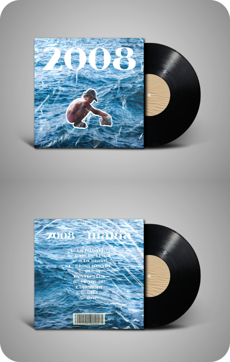

Aquesta és l’activitat d’aquesta assignatura que més vaig gaudir. Consistia a elaborar el disseny d’un vinil per un disc fictici que havíem de crear. El disseny havia d’estar relacionat amb el tipus de música que féssim si traguéssim un disc. Per fer-lo jo em vaig inspirar en grups de música pop-rock/alternativa catalans. El disc narraria tot de records d’infantesa i sobretot del 2008, nom del disc, i vol ser una metàfora d’arrels i llibertat alhora. Aquest en va ser el resultat:
